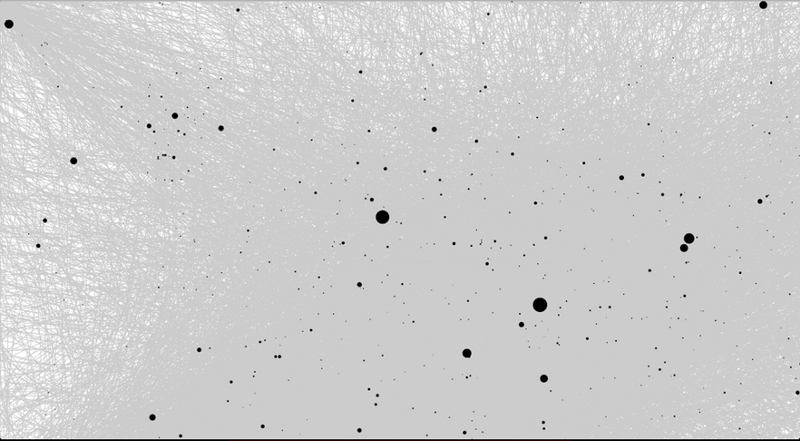

“The mouse is probably the narrowest straw you could try to suck all of human expression through.” - Joy Mountford (Head of Human Computer Interactions at Apple, 1986-1994)
There is this one thing that has been (albeit very) slowly evolving and getting obsolete at the same time — the mouse. But like most people who work with data, I’m stuck behind a cursor. And therefore curious about how my mouse data looks. And that my friend has gotten us here. So, I put together a piece of code which could gather all the coordinates of the cursor movements that I make; the result of which is here. In a gist, the program gets the latest coordinate, compares to the previous one (if it exists) and stores it if-new.
Findings
I ran the script for equal amount of time on a Windows laptop and a Macbook Pro. Though I use them for programming purposes mainly, there was a huge gap between the sizes of the files generated. On a Windows laptop, the file size turned out to be approx. 20MB/day and on the Macbook Pro it was 3MB/day.
There are two reasons for that, according to my usage -
I use shortcuts on the Mac excessively. More reflexively so, than I’ve ever done on any OS before. (I like the fact that the Preferences menu on all the apps that I use open with the Command+, combination. Yes, I’m a sucker for these things.)
also the fact that since the two-finger scrolling on the Apple baby, does not visually move the cursor, scrolling does not add data to the pile. It saves time and patience by not having you drag the cursor to the scrollbar and pull it down (-town), each time. I don’t find using the space-bar to scroll with, smooth enough for my needs.
Now, visualizing this data from the Windows machine actually shows the most active areas of cursor activity and places that I leave my cursor waiting The black circles are places I let my mouse cursor idle; the longer it idles, the bigger they are. You can see the many number of trips to the program-launcher at the bottom of the screen and how the middle-to-right quadrant of the screen is a very busy traffic area. Reason being Windows likes to place apps in this region when they are launched and hence the mouse activity between them.

In total I figured I’ve used my mouse for almost an hour for the four hour period that I had gathered data for. And my wrists had moved my mouse a good 163 meters (assuming, 1 meter ~ 3779 pixels).
That’s a lot of —
Keyboard shortcuts, anyone ?
Comments
Loading comments...